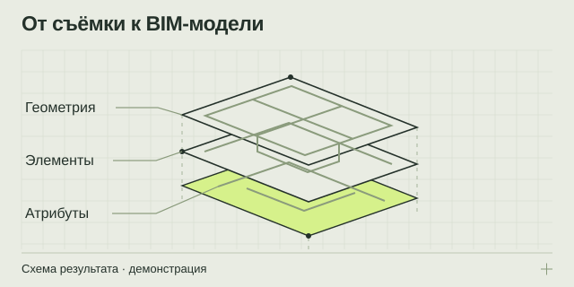

НАПРАВЛЕНИЕ 03 / ПРОЕКТИРОВЩИКАМ И КОМАНДАМ РЕКОНСТРУКЦИИ
Scan-to-BIM: модель существующего объекта
Переведите измеренную геометрию в структурированную информационную модель с согласованными элементами, атрибутами и правилами передачи.
BIM-модель + виды + перечень допущений
IFC / согласованный нативный формат

Из задачи — в проверяемый результат
Облако точек показывает множество измеренных поверхностей; BIM-модель описывает объект через структурированные элементы. Такой переход полезен, когда проектной команде нужны стены, перекрытия, проёмы или другие согласованные категории для дальнейшей работы. Модель создаётся под конкретный сценарий: реконструкцию, координацию или подготовку данных для эксплуатации. Название Scan-to-BIM само по себе ещё не определяет полноту результата.
С чего начинается подходящая модель
Сначала определяют, кто будет использовать результат и какие решения на его основе принимать. От этого зависят перечень категорий, геометрическая детализация, обязательные атрибуты и допустимые упрощения. Важно согласовать требования принимающей проектной команды до начала моделирования.
Если облако точек уже есть, проверяются его актуальность, охват и пригодность для поставленной задачи. При отсутствии данных можно включить съёмку в общий состав работ. Эти этапы лучше разделить в предложении, чтобы было понятно, что именно приобретается.
Что входит в процесс
- Требования к модели. Согласуются категории, атрибуты, координаты, форматы и допустимые отклонения.
- Подготовка данных. Проверяются облака точек и другая документация, выявляются пробелы.
- Моделирование. Формируются элементы в пределах подтверждённой геометрии и задания.
- Сопоставление. Проверяется соответствие модели исходным данным с учётом принятых допусков.
- Передача. Подготавливаются файлы, согласованные виды и перечень допущений для следующего этапа.
Что получает проектная команда
- Информационную модель с согласованным набором элементов и параметров.
- Виды и сечения, если они предусмотрены заданием.
- Описание координат и структуры для совместимости с рабочим процессом заказчика.
- Перечень ограничений: неполные данные, условные элементы, упрощения и участки, требующие уточнения.
Передачу в IFC и конкретном нативном формате обсуждают заранее. Совместимость зависит не только от расширения файла, но и от версии программного обеспечения, параметров экспорта и требований получателя.
Какие данные нужны для оценки
Подготовьте описание объекта и цель моделирования, исходное облако или сведения о возможности съёмки, имеющиеся чертежи и перечень обязательных элементов. Если у вашей организации есть требования к информационной модели, приложите их к обсуждению.
Укажите, какие атрибуты известны документально, а какие ещё предстоит получить. Например, измеренная форма элемента не подтверждает его материал, армирование или скрытое устройство. Неизвестные характеристики следует обозначать как неизвестные.
От чего зависит расчёт
На трудоёмкость влияют сложность объекта, качество исходных данных, число категорий, требуемая детализация, заполнение атрибутов и необходимость дополнительных видов. Существенны также правила контроля модели и взаимодействия с проектной командой.
Обозначения уровней детализации без расшифровки недостаточно: в задании нужно перечислить конкретные элементы и требования. Это снижает риск разных ожиданий у заказчика и исполнителя и делает приёмку результата предметной.
Ответы перед заказом
Чем BIM отличается от красивой 3D-модели?
Помимо геометрии важны структура элементов и согласованные атрибуты. Состав полезной информации зависит от задачи; визуально похожие модели могут существенно различаться по пригодности для проектной работы.
Можно моделировать только часть здания?
Да, границы работ и категории можно ограничить. Нужно согласовать, как эта часть будет связана с остальным проектом и какие исходные данные доступны.
Получится ли сразу использовать модель для эксплуатации?
Это зависит от заранее согласованных требований и полноты атрибутов. Модель для геометрической координации не автоматически содержит сведения, необходимые эксплуатационной системе.
Подготовьте вводные без лишней переписки
Откройте памятку: она помогает описать объект, собрать исходные данные и выбрать нужный результат.
Что подготовить для расчёта ↗ОТ ЗАДАЧИ К СОСТАВУ РАБОТ
Обсудим ваш объект
Подготовьте город, тип и примерную площадь объекта, цель работ и имеющиеся документы. В брифе можно собрать вводные и открыть письмо экспертному партнёру.
Экспертный партнёр — АНО «МСК-Эксперт»: +7 495 648-50-91 · официальный сайт и форма обращения ↗. При нажатии на почтовую ссылку откроется ваша программа: письмо отправляете вы.